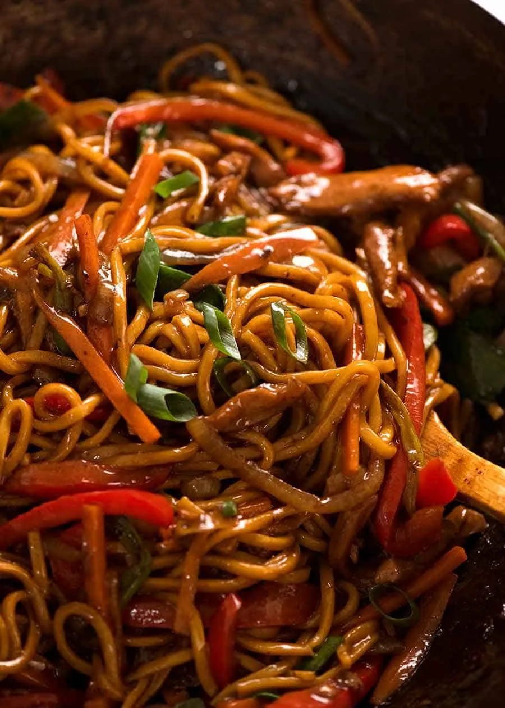

Lo Mein Noodles
These savoury and hot noodles will make you sweat through every bite!

Ingredients
- 1.5 tbsp vegetable or peanut oil
- 2 garlic cloves , finely minced
- 1/2 onion , finely sliced
- 300g / 10oz chicken or other protein , sliced 0.5cm / 1/5" thick
- 2 medium carrots , peeled and cut into 4 x 0.75cm / 1.75 x 1/3" batons
- 1 large red capsicum / bell pepper , sliced (or 2 small)
- 6 green onions , cut into 5 cm/2” lengths
- 500g / 1lb Lo Mein, Hokkien or other medium thickness egg noodles, fresh, , prepared per packet
- 1/4 cup (65ml) water
-
Sauce:
- 4 tsp cornflour / cornstarch
- 2 tbsp dark soy sauce
- 2 tbsp soy sauce or light soy sauce
- 1 tbsp Chinese cooking wine or Mirin
- 1 tsp white sugar (omit if using Mirin)
- 1/2 tsp sesame oil , toasted, optional
- 1/4 tsp white pepper (sub black)
Steps
- Sauce: Mix cornflour and dark soy until lump free, then add remaining Sauce ingredients.
- Season Chicken: Transfer 2 tsp Sauce into bowl with chicken. Toss to coat.
- Heat oil in a wok or large heavy based skillet over high heat until smoking.
- Add onion and garlic, stir 30 seconds.
- Add chicken, stir until white on the outside, still raw inside - 1 minute.
- Add carrot and capsicum/bell peppers, cook 2 minutes or until chicken is cooked.
- Add noodles, Sauce and water. Use 2 wooden spoons and toss for 30 seconds.
- Add green onions, toss for another 1 minute until all the noodles are slick with sauce.
- Serve immediately, garnished with extra green onions if using.
Home
Special thanks to my buddy $$$ which helped make this recipe, if it wasn't for $$$, I wouldn't have the ingredients at all! Thanks again, $$$